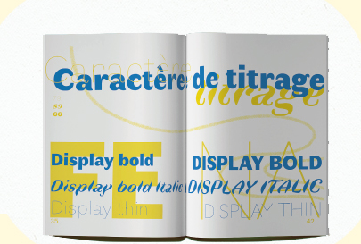

Lélé Leloutre

Proposition de spécimen
autour de la typographie Faune.
Il contient l’explication brève de la typographie, quelques illustrations et des textes de poète·sses
qui viendront présenter en finesse puis en détails le dessin des caractères typographiques.
Le spécimen est découpé en trois parties, trois éditions conçues pour être positionnées les unes en dessous des autres pour accéder à l’illustration et composition typographie entières. Ce découpage permet une approche ludique et active des spectateur·ices.
matériaux :
Feuilles a3 80grammes
Risographie : bleu et jaune
Illustrations originales
format A5 br